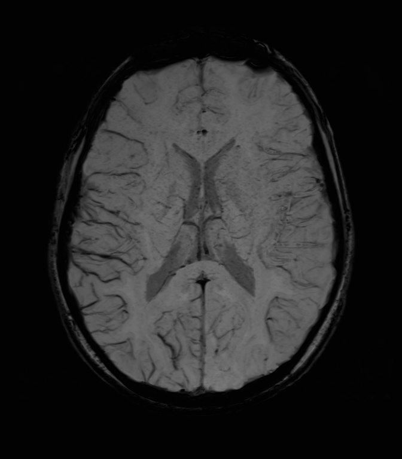

Recurrent headache, left sided weakness, and expressive aphasia in a 9 year old.
What is the most likely diagnosis?
Reveal Options
Medullary vein thrombosis
Intravenous iron therapy
Hemiplegic migraine
Cerebral vasculitis
Submit